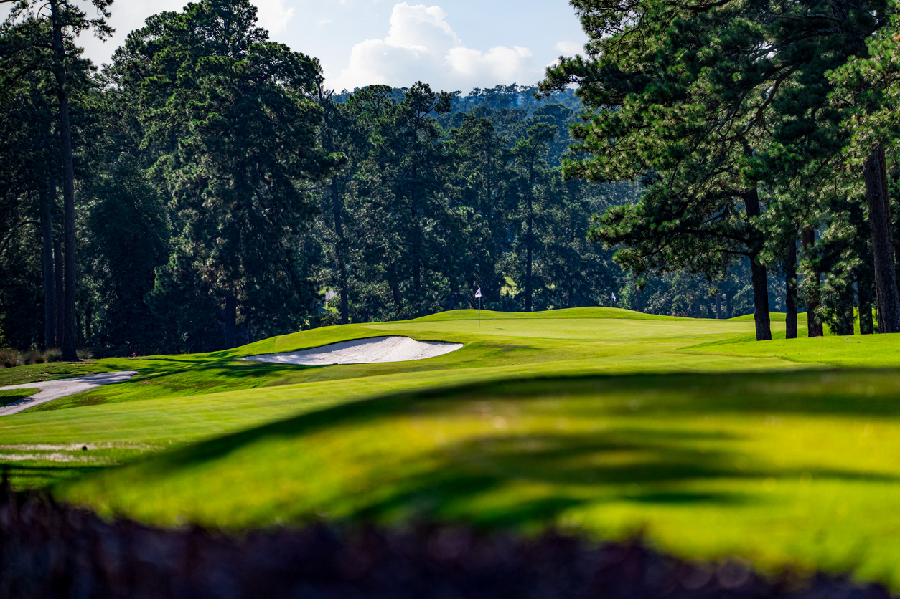

Welcome to Augusta
City Overview
Augusta, Georgia, nestled along the banks of the Savannah River, is a historic city renowned for its Southern charm and cultural significance. Established in 1736, Augusta stands as one of Georgia's oldest cities, steeped in centuries of history. As of the latest estimates, Augusta's population hovers around 200,000, making it one of the largest cities in the state. Incorporated in 1798, Augusta has evolved into a vibrant community, celebrated for its rich heritage, picturesque riverfront, and world-class golfing facilities, including the prestigious Augusta National Golf Club, home to the Masters Tournament.
(Source: Wikipedia)Region and Classification
Augusta, Georgia, is located in the Central Savannah River Area (CSRA) region of the state. It is classified as a major metropolitan area within Georgia, serving as a significant economic and cultural center for the region. With its diverse industries, historical significance, and extensive amenities, Augusta plays a crucial role in shaping the economic landscape and cultural identity of both the local community and the broader state.
(Source: New Georgia Encyclopedia/Georgia Geographic Regions)Average Income and Economy
In 2022, the median household income of Augusta households was $50,492. The average income for Georgia is $71,355. As a significant economic hub, Augusta benefits from diverse industries such as healthcare, manufacturing, and military installations, which contribute to its economic stability. While fluctuations may occur, Augusta's median income tends to mirror the broader trends observed across Georgia, underscoring its integral role in the state's economic landscape.
(Source: US Census)